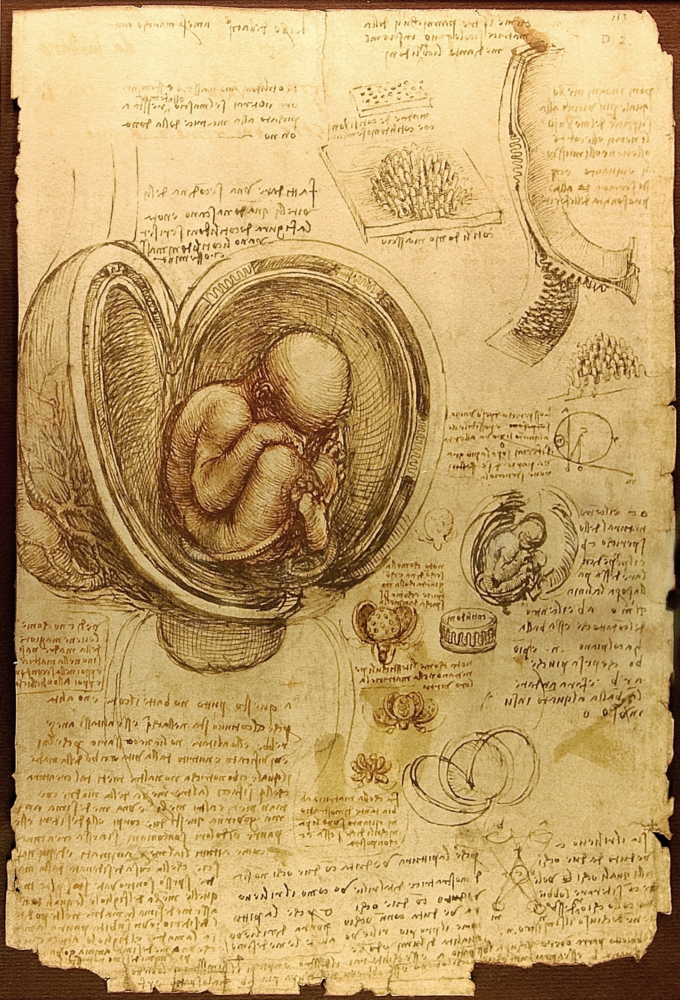

Salmo 139 — La Traducción Mister

Los vv. 13-16 en un dibujo. El salmo dice que el que habla fue entretejido en el vientre — sakak, cubierto tejiendo — y bordado en las profundidades de la tierra, y Leonardo ha dibujado el útero abierto en capas exactamente así.
Pero lo que mejor encaja es lo que la página es: un estudio, un hombre abriendo cuerpos para averiguar cómo están hechos. El verbo del propio salmo es chaqar, escudriñar, prospectar, examinar — y el salmo abre diciendo que eso ya se le ha hecho al que habla, y cierra pidiéndolo otra vez. Leonardo hace desde fuera lo que el v. 1 dice que se hizo desde dentro antes de que él empezara.
La hoja está cubierta de su escritura especular, de derecha a izquierda y legible sólo en un espejo, lo cual es un chiste callado para colgar junto a una columna hebrea que también va de derecha a izquierda, en un salmo sobre ser leído por alguien que no necesita espejo.
⚠ Y una advertencia honrada: Leonardo fue el observador más cuidadoso de su siglo y esta anatomía está en parte equivocada. Las pequeñas estructuras redondas son cotiledones, las adherencias en botón de la placenta de una vaca, no de una mujer. Diseccionaba animales y extrapolaba. Una página de observación magnífica, paciente y errónea es algo justo que poner junto a un poema sobre ser conocido del todo.
{kind=link}
Notas del traductor — versículo por versículo
Cada nota explica la decisión de esta traducción y la compara con las versiones de la estantería.
1–6 — El verbo que volverá al final
El salmo abre con chaqar: escudriñar, la palabra de prospectar, de reconocer un país, de instruir una causa. Jehová ha escudriñado al que habla, en pasado, ya hecho. Reténgase: el salmo se cierra pidiendo exactamente ese mismo verbo (v. 23), y lo que hay entre las dos apariciones cambia lo que significa la petición.
El zarita del v. 3 es palabra de aventar: lanzar el grano al aire para que se lleve la paja. Aplicado a la senda y al acostarse de una persona no es amable. Y el tsartani del v. 5, «me has cercado», es verbo de asedio. Este comienzo es más ambivalente que su fama devocional: ser conocido del todo es estar rodeado del todo.
⚠ Nota de escriba en el v. 6. La columna hebrea trae un ketiv/qeré — el aparato masorético de «lo escrito / lo leído». Las consonantes tal como se escriben son פלאיה; la forma que la tradición lee es פְּלִיאָה. Arriba se imprimen las dos, sin puntuar y puntuada, tal como lo hacen los manuscritos. Aquí el sentido no cambia — pero ese mismo aparato va a decidir el versículo más difícil del salmo.
7–12 — El Seol, y un verbo extraño para la oscuridad
El v. 8 pone el cielo y el Seol como los dos límites, y dice que Dios está en ambos. Es una afirmación más fuerte de lo que parece: en otros salmos el Seol es justamente donde a Dios no se le recuerda y donde no actúa (6:5; 88:10-12; 115:17). Este versículo se planta contra aquellos, y el salmo no los concilia.
El yeshupheni del v. 11 es raro: la raíz significa magullar o aplastar — es la palabra de la serpiente y el calcañar en Génesis 3:15. «La oscuridad me magullará» es lo que dice el hebreo, y casi todas las versiones lo leen como «cubrir» suponiendo otra raíz. RV pone «me encubrirá». Arriba se conserva la magulladura.
13–15 — Riñones, bordado, y lo que quizá no dice el v. 14
El v. 13 tiene a Dios adquiriendo los riñones del que habla. En la fisiología hebrea los riñones son la sede de la conciencia y del yo más hondo, el órgano que Dios prueba (Jeremías 17:10). Y el verbo es sakak, cubrir tejiendo — la misma raíz que la cubierta del arca y que la sucot. El vientre es un abrigo tejido alrededor de alguien.
⚠ Y ahora la línea famosa, que quizá no habla del que habla. El v. 14 en hebreo es nora’ot niphleti: dos palabras. Niphleti es una forma de primera persona que significa algo así como «soy distinguido / apartado / hecho maravilloso», y es lo bastante torpe gramaticalmente como para que los traductores tengan que suplir un verbo. La KJV suple made, «hecho». Pero RV 1909 lee la maravilla como perteneciente a las OBRAS DE DIOS y no al que habla: «porque formidables, maravillosas son tus obras». Con esa lectura el versículo nunca dice «estoy hecho de forma maravillosa»: dice que las obras son maravillosas, que es lo que dice la segunda mitad en cualquier caso. TNM se va por el otro lado («estoy hecho de forma maravillosa, impresionante»). La frase más citada del salmo descansa sobre una palabra suplida.
El ruqqamti del v. 15 es bordado: labor de aguja en hilo de color, la palabra de las cortinas del tabernáculo. Y «las profundidades de la tierra» no es literalmente el vientre; es una equivalencia poética que pone calladamente en la misma línea el ser formado en el vientre y el ser formado en el inframundo.
16 — ⚠ Un hapax, y un pasaje que decidieron los escribas al margen
Golmi aparece una sola vez en la Biblia hebrea, aquí: una masa informe, sin figura — la cosa antes de recibir forma. La palabra tuvo larga descendencia, porque es la raíz del golem de la leyenda judía posterior. RV acierta de pleno con «mi embrión», y TNM igual («cuando yo era un embrión»); la KJV intentó «my substance, yet being unperfect».
⚠ Y luego la segunda mitad, la frase más difícil del salmo. La razón de que las traducciones diverjan tanto no es el vocabulario. Es un ketiv/qeré, y está impreso arriba: las consonantes escritas son ולא, «y no»; la forma que la tradición lee es וְלוֹ, «y para él». Una letra — alef o vav — y la cláusula se da la vuelta:
— Con el ketiv: «días fueron formados, y ni uno de ellos», es decir,
quedaron escritos antes de que ninguno existiera.
— Con el qeré: «días fueron formados, y para él uno de
ellos», afirmación bastante distinta y mucho menos clara.
Lo verdaderamente interesante es que la estantería sigue en su mayoría la forma escrita y no la leída: TNM pone «antes de que existiera cualquiera de ellas», y la KJV y la NWT igual. La tradición de lectura está de un lado y casi todas las traducciones del otro. ⚠ Aquí tampoco se vota: arriba se sigue el ketiv y se imprimen los dos.
17–18 — Una suma, y un despertar
Rasheihem (v. 17) es «sus cabezas» y, en uso contable, sus sumas o totales: la cabecera de una columna de cifras. El salmo cuenta los pensamientos de Dios y encuentra el total inalcanzable, que es el mismo movimiento que hizo el v. 6 con el conocimiento.
«Despierto, y aún estoy contigo» (v. 18) es una de las líneas más calladas del Salterio y no está claro qué significa: despertar de un sueño real, o despertar de la muerte. Nada en el hebreo lo resuelve, y la ambigüedad es muy antigua.
19–22 — ⚠ La parte que nunca se cita
Aquí está el pasaje que casi nada de lo que cita el v. 14 menciona. El que habla pide a Dios que mate a gente (v. 19), y luego declara su propia postura: tachlit sinah sneitim — con un odio completo los aborrezco. Tachlit es culminación, el fin o el límite de una cosa: odio llevado hasta el final. RV lo traduce «perfecto odio», igual que la KJV. Sólo TNM disuelve el sustantivo de la frase («odio es todo lo que siento por ellos»).
El v. 20 es textualmente áspero, y conviene admitirlo: nasu la-shav areicha es literalmente «alzan tus ciudades para vanidad», lo que no significa obviamente nada aquí, y muchos leen areicha como «tus adversarios». Las versiones varían mucho y ninguna está segura. Arriba se conservan las ciudades y se dice aquí.
23–24 — ⚠ Por qué el final no es un cambio de tema
Este es el sentido de toda la página. El v. 23 pide a Dios que chaqar — el mismo verbo del v. 1, y el único otro lugar donde aparece. El salmo está entre corchetes: me has escudriñado (v. 1) … escudriñame (v. 23).
Y la petición llega inmediatamente después del odio completo. Leído como corchete, el v. 23 no es un añadido piadoso a un poema cómodo sobre ser conocido: es el que habla sometiendo a examen lo que acaba de decir. Ha declarado odio completo y a continuación pide ser escudriñado y probado, y que se le muestre si hay en él un camino de dolor. Esa lectura toma los vv. 19-22 como la razón de que el salmo acabe así, y no como un estorbo que saltarse.
⚠ Dos palabras del v. 24. Derekh otzev es literalmente un camino de dolor — y la KJV imprime «wicked way» en la línea mientras dice la verdad en su margen («Heb. way of pain, or, grief»). RV pone «camino de perversidad» y TNM interpreta «alguna mala tendencia»; sólo la NWT inglesa pone lo literal en la línea.
Y las últimas palabras son derekh olam. TNM pone «el camino de la eternidad». Pero olam mira hacia atrás con tanta facilidad como hacia adelante, y «el camino antiguo» es igual de defendible: el camino que siempre estuvo ahí. Esta biblioteca encontró la misma palabra en Eclesiastés 3:11, donde la estantería se dividió en tres.
Patrones que conviene retener.
⚠ Lo esencial. Chaqar, escudriñar, aparece exactamente dos veces: «me has escudriñado» (v. 1) y «escudriñame» (v. 23). El salmo está enmarcado por ese verbo — y lo que hay en medio son los vv. 19-22, la parte que nadie cita, donde el que habla pide a Dios que mate a gente y dice que los aborrece con un odio completo. Leída como marco, la petición final no es un añadido piadoso a un poema cómodo sobre ser conocido: es el que habla sometiendo a examen lo que acaba de decir. Eso convierte los vv. 19-22 en la razón de que el salmo termine así.
⚠ El versículo más difícil lo decide una nota de escriba. En el v. 16 la columna hebrea trae un ketiv/qeré: forma escrita ולא, «y no»; forma leída וְלוֹ, «y para él». Una letra, y la cláusula se da la vuelta. Eso, y no un vocabulario oscuro, es la razón de que las traducciones diverjan tanto ahí. Y la estantería sigue en su mayoría la forma escrita, no la leída.
⚠ Y un hapax con descendencia. Golmi (v. 16) aparece una sola vez en la Biblia hebrea: una masa informe, materia antes de tener figura. Es la raíz del golem de la leyenda judía posterior. RV acierta con «mi embrión», y TNM igual.
⚠ La línea más citada descansa sobre una palabra suplida. El v. 14 son dos palabras hebreas, nora’ot niphleti, y el «hecho» hay que suplirlo. RV 1909 lee la maravilla como perteneciente a las obras de Dios y no al que habla — y con esa lectura el versículo nunca dice «estoy hecho de forma maravillosa».
El comienzo es menos cómodo que su fama. El zarah del v. 3 es palabra de aventar — grano lanzado al aire para que se vaya la paja — y el «me has cercado» del v. 5 es verbo de asedio. Ser conocido del todo es estar rodeado del todo. Y la oscuridad del v. 11 magulla (la palabra de Génesis 3:15); las versiones leen «cubrir» por otra raíz.
Decisiones. Riñones en el v. 13, sede de la conciencia en la fisiología hebrea. Entretejer para sakak. Bordado para ruqqam en el v. 15. Y en el v. 24, camino de dolor para derekh otzev, que la KJV pone en su margen mientras imprime «wicked way» en la línea.
Ecos pagados. El salmo termina en derekh olam — «el camino de la eternidad», o igualmente «el camino antiguo», porque olam mira atrás con la misma facilidad que adelante. Esta biblioteca encontró la misma palabra en Eclesiastés 3:11, donde la estantería se dividió en tres.
⚠ Queda áspero. El v. 20 es textualmente difícil: nasu la-shav areicha es literalmente «alzan tus ciudades para vanidad», que no significa obviamente nada; muchos leen «tus adversarios». Se conservan las ciudades, y se nombra el problema.
⚠ Sobre el orden: los Salmos figuran en estas páginas en el 1, el 23, el 91 y ahora el 139 — elegidos por demanda de búsqueda y no en secuencia. El hilo secuencial sigue intacto: el siguiente en orden es el Salmo 2, que es adonde apunta la navegación de arriba.